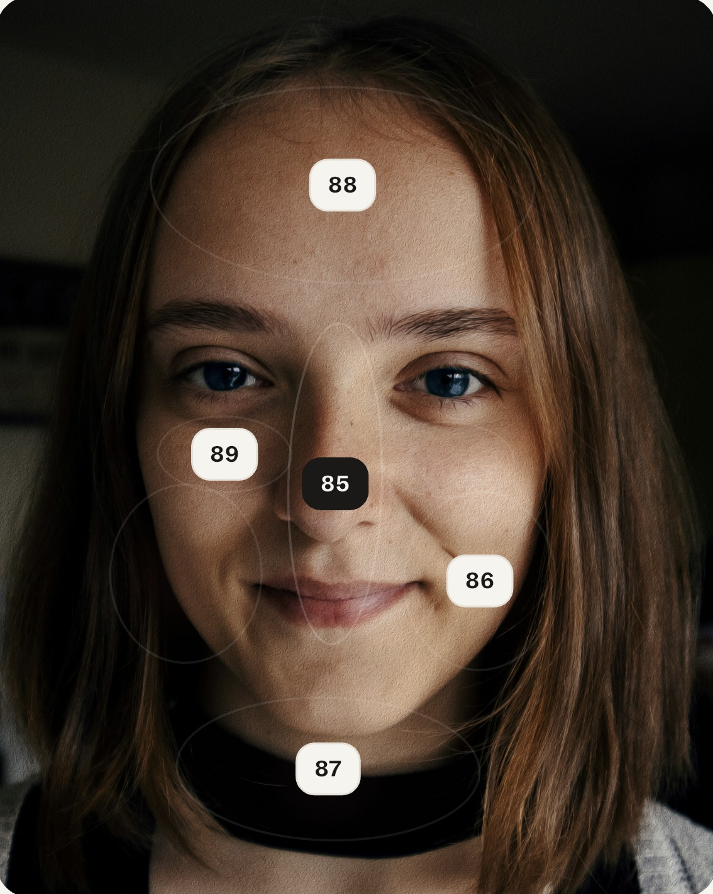
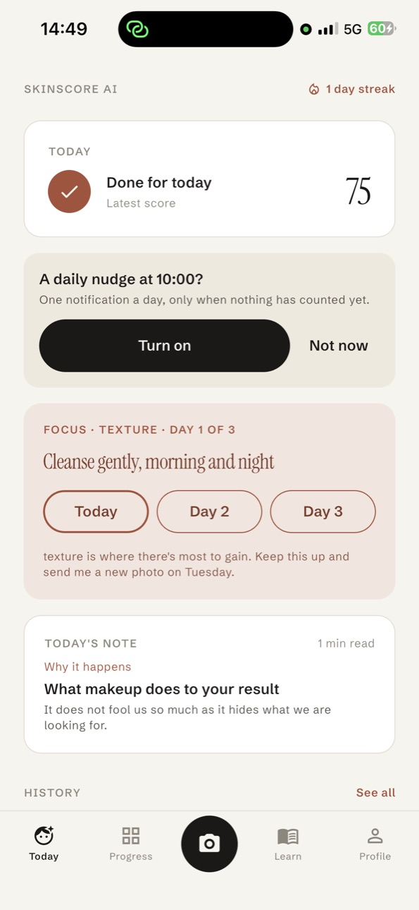

A selfie, a skin score, one habit to keep.
SkinScore AI reads how your skin looks today: a score out of 100, a face map with a note on every region, an estimated skin age, five sub-scores — then one habit to try for three days before the next scan.
First scan is free. No account, no e-mail, no ads. Your photo stays on your phone.

Not a mirror. A second opinion that remembers yesterday.
A score out of 100
How rested and healthy your skin looks right now, in one number you can watch move.
Five sub-scores
Rested look, under-eyes, dewiness, texture, radiance. Each one gets its own number.
A face map
Forehead, cheeks, T-zone, under-eyes, chin: a short note pinned to every region.
Skin age
How old your skin looks today, next to your real age. Appearance, not a measurement.
Since your last scan
From the second scan on: what moved, what held, and what probably did it.
One habit, three days
Sleep, water, screens off, gentle cleansing or SPF: one thing to keep, then scan again.
Ten seconds, once a day.
Window light, no filter, hair back. That is all the preparation it needs.

Take one selfie
The app checks the light and the angle first, so the reading is about your skin and not about the room.

Read your skin
Score, headline, face map, sub-scores, three observations. Everything in appearance language, nothing clinical.

Keep one habit
A three-day focus on the area with the most to gain, a daily nudge if you want one, and a streak that rewards showing up.
Your face is yours. We treat it that way.
- You are asked before any photo is sent to the AI service, and you can say no.
- The selfie is sent encrypted for the analysis and is not stored on our servers.
- Your readings, photos and answers live only on your phone. Delete a scan, or the app, and they are gone.
- No account, no e-mail address, no advertising identifiers. Crash reports and anonymous usage counts only.
The first scan is free. Pro is the daily habit.
SkinScore Pro unlocks a scan every day with retakes when the light is bad, skin age, the full face map and the weekly graph. Yearly with a 3-day free trial, or weekly. Cancel any time from your store account.
Questions people ask first.
Is this a medical app?
No. SkinScore AI is a wellness app. It describes how your skin looks today, in appearance language; it does not measure, detect or diagnose anything, and it never recommends a product or a treatment. If something worries you, see a dermatologist.
Where does my photo go?
After you agree, it is sent encrypted to our server, passed to the AI model for the reading, and discarded. It is kept only on your phone. There is no account, so nothing is tied to your name.
Why did my score drop?
Usually light. A dim room, a yellow lamp or a filter changes how skin reads more than a night of sleep does. The app tells you when the light is off, and Pro lets you retake. Beyond that, sleep, water and screen time before bed are the three things that move the score the most.
Which phones does it work on?
Android 7.0 and newer, on Google Play now. The iPhone version is in App Store review.
How do I cancel Pro?
From your Google Play or App Store subscriptions page, like any other subscription. Cancel at least 24 hours before the period ends and you are not charged again.